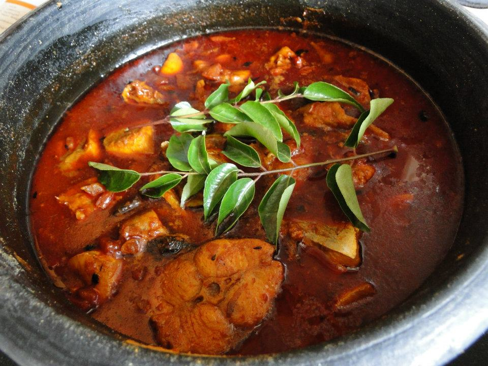

Kerala Fish Curry

Description
Explore the exclusive taste of Malabari spices seeped into juicy fish pieces. Kerala fish curry is a very delicious option to prepare for the next dinner party or regular meal, paired with steamed rice.
Ingredients
- 1/2 kg Fish(any fish)
- 2 tbsp Kashmiri Chilli powder
- 1/2 tbsp Chilli powder
- 1 pinch Turmeric powder
- 3 pcs Brindleberry/Kukum Star
- 1 inch pc Ginger
- 6 nos Garlic cloves
- 6 nos Shallot
- 1 sprig Curry leaves
- 1/2 tsp Fenugreek seeds
- 1/2 tsp Mustard seeds
- 2 & 1/2 tbsp Coconut oil
- Salt
Steps
- Clean the fish and keep aside.
- Soak Brindleberry in 2 cup of hot water with little salt added in it.
- Chop shallot, ginger and garlic finely.
- Kashmiri Chilli powder, normal chilli powder, and turmeric powder should be made as a paste adding little water.
- Heat 2 tsp coconut oil in a cooking pan, put mustard and fenugreek seeds. When it splutters, to this add finely chopped shallot, ginger, and garlic and stir well.
- When it becomes golden brown, reduce the flame and put chilli and turmeric powder paste into it. Stir it well in a very low heat for a few minutes.
- Add socked Brindleberry and water to the pan and allow to boil.
- When it boils put fish and add salt to taste.
- Reduce the flame and cook tiil done. When it is done add curry leaves and 1/2 tbsp coconut oil and remove from the flame after 1 minute.
- Kerala fish curry is ready. Let the curry remains in the cooking pan for a few hours, allowing all the spices to steep into the fish.